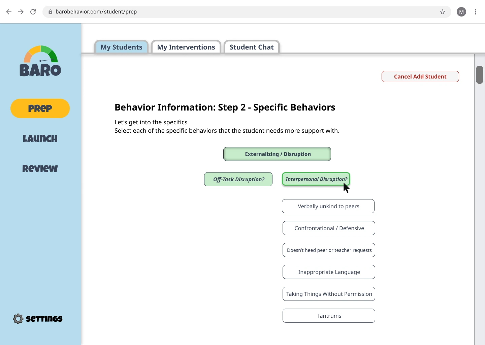
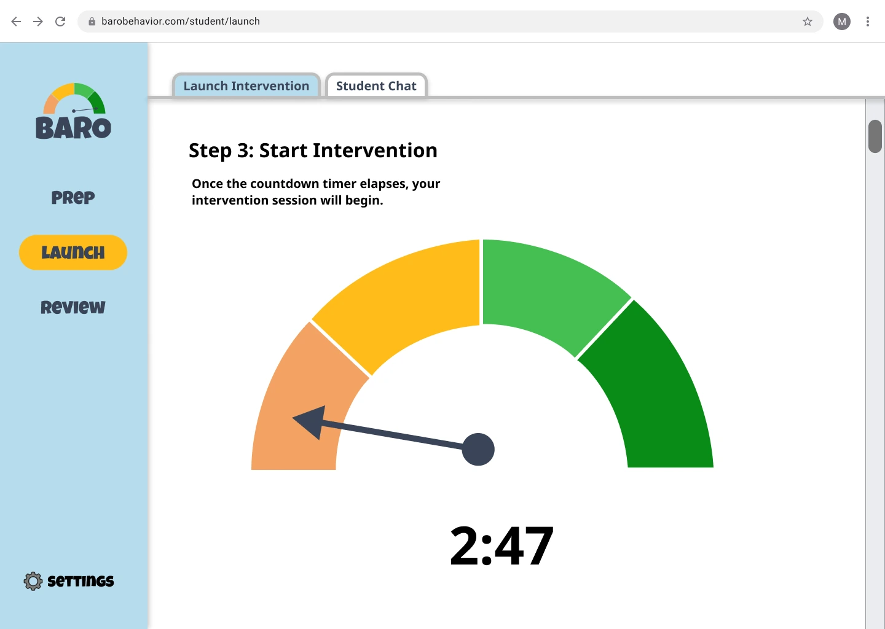
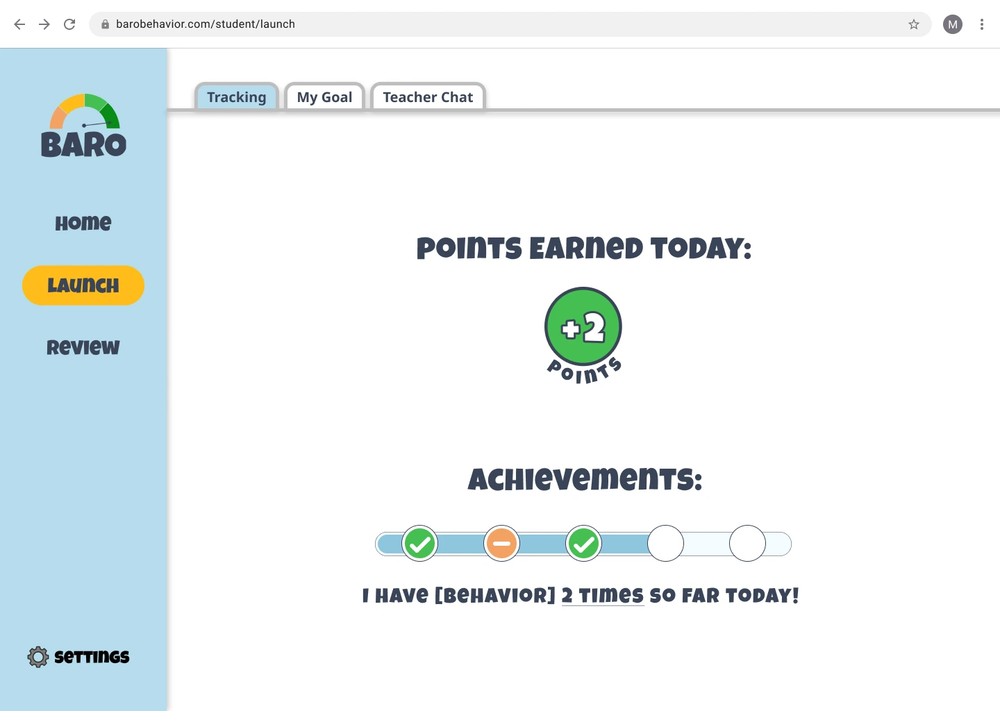
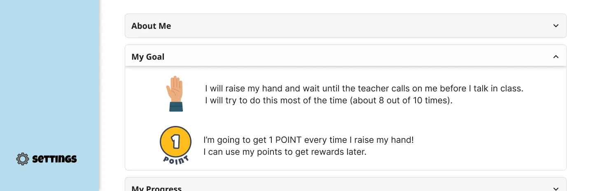

Taking a behavior intervention platform for teachers from 0 to 1.
A founder knew exactly how a good behavior intervention works. Engineers needed rules, not clinical terms. As project manager, I turned that expertise into something 6 engineers could build.
A founder knew exactly how a good behavior intervention works, but engineers can’t build from clinical terms.
What I did
As project manager, translated every clinical idea into a rule, a state or a screen, and organized the build into milestones that 6 engineers could ship.
What I learned
Learn the domain to protect it. A vague requirement would have quietly changed the intervention itself.
The thread: the expertise existed; it just wasn’t buildable yet. My job was making it explicit without losing what made it work.
The challenge
The expertise existed. It just wasn’t buildable yet.
The founder knew exactly how a good intervention should work, and the Figma file showed how it should look. But engineers can’t build from terms like “variable ratio reinforcement.” Every clinical idea needed to become a rule, a state, or a screen.
How might we turn expert behavioral knowledge into product logic that 6 engineers could build, and a busy teacher could trust?
My role
I translated between the founder, the designs, and the engineers.
My cognitive science background helped me understand the behavioral concepts well enough to explain them in engineering terms. We organized the build into seven milestones, each pairing planned work and a clear deliverable with specific questions for the founder.
AccountsTeacher and student login
DashboardsCore screens and tabs
Teacher PrepAdd students, match interventions
Teacher LaunchRun timed interventions
Teacher ReviewProgress and insights
Student pagesPrep, launch, and review
AIOptional assistant
The product
Two experiences, built around the same three steps.
Baro supports one student at a time, because individual support was the point. Teachers and students both move through the same structure, even though each sees something different.
Prep
Teachers describe a behavior and choose an intervention. Students see their goal and rewards.
Launch
Teachers start a session for selected students. Students track their points live.
Review
Both sides look back at progress, points, and achievements.
Behavior logic
One question decides how a student gets rewarded.
The behavior tree covers 41 behaviors across 6 categories. Each one is tagged by type, and that tag sets the reward schedule. Rewards then fade in three phases, so a student can build a habit without depending on constant points.
Does the behavior have a clear start and finish?
Example: inappropriate language. Schedule: ratio, based on how many times the goal behavior happens.
1 · AdoptionEvery instance earns a pointAt least 1 week or 3 sessions
2 · GrowthThe ratio grows as goals are metUntil 80% of the goal on 3 of 5 days
3 · MaintenanceRewards become variableDifficulty keeps increasing over time
Teacher flow
Turning a hard judgment call into guided steps.
Narrow from broad to specific.
Teachers move from a category to one target behavior. Those answers give the behavior tree what it needs to recommend an intervention.

Launch in three steps.
Select students, choose settings, and start. The barometer counts down, so the session has a clear beginning.

Student flow
Keeping goals clear and motivation kind.
Show progress in the moment.
Students see points and achievements at a glance, while the reward logic stays behind the scenes.

Write goals in a student’s words.
“I will raise my hand and wait until the teacher calls on me.” A goal should be easy to picture and repeat.

Hard problems
The hardest part was everything between the design and the code.
Figma didn’t translate directly.
The problem
A single student screen could change with the reward schedule, session state, or whether rewards were unlocked. Static frames couldn’t capture all of that logic.
How we handled it
We built in milestones, tied requirements back to Figma, and marked features like chat as optional for the prototype.
Behavioral science had to become rules.
The problem
Concepts like reinforcement schedules are precise for clinicians but abstract for engineers. A vague requirement would have changed the intervention itself.
How we handled it
We turned them into explicit tags, thresholds, and if-then logic.
AI could have come too early.
The problem
An LLM could eventually recommend interventions, but the first version needed behavior teachers could predict and understand.
How we handled it
We started with decision-tree logic and kept AI as a later, optional milestone.
Reflection
A good spec is an act of translation.
Baro taught me that managing a 0-to-1 product means understanding the domain deeply enough to protect what matters. Knowing why a reward schedule works helped me make better scope decisions, ask the founder better questions, and give engineers requirements they could actually build.
What I learned
Learn the domain to protect it. A vague requirement would have quietly changed the intervention itself.
Make expertise explicit. Clinical ideas only became buildable once they were tags, thresholds, and if-then rules.
Earn the right to add AI. Teachers needed behavior they could predict first, so AI waited for a later milestone.
What was harder than expected
Figma. A single student screen changed with the reward schedule, the session state, and what was unlocked, and static frames couldn’t hold that. Tying every requirement to a milestone did.